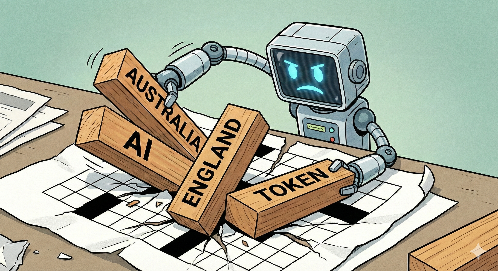

Sometimes it’s still hard to predict what will trip up AI.
Over coffee last month, my stepfather mentioned he’d tried to use AI to make a crossword — and it had failed miserably. Since I try to find a way to use AI in pretty much everything I do, and generally find it exceptionally proficient, I assumed this must have been down to user error. The task sounded trivial — clearly this was a case of a lack of familiarity with the tools — so I confidently decided to show him how it was done.
(This project was run in late December 2025, on a few of the then-frontier models.)
The Objective: Create a Crossword
The crossword was for Year 6 students studying Australian history. We had a two-page document containing a list of around 30 questions and answers. The task for the AI was to arrange the answers into a crossword-style grid, and draw it up.
A successful answer needed to have:
- every answer placed (no answer dropped);
- every answer correct (no spelling mistakes, no transposed letters);
- obey basic crossword rules (intersections encouraged; no accidental “side-by-side” words creating nonsense); and
- clues cleanly listed and presented in a standard crossword format.
I also wanted to demonstrate that this workflow could be done using basic tooling available to everyone, without any special knowledge of the AI space, and without requiring specialised coding tools or AI agents. So this project was done entirely within the chat windows of the respective AI providers.
Approach 1: One Shot Image Generation
I started with Gemini because its latest “nano banana” image mode was all the rage online at the time, so I was pretty confident it would give the challenge a good crack. People seemed particularly impressed by its ability to handle text inside images much more reliably than other models (a notoriously difficult problem for diffusion models). So I gave it a simple prompt, fed in the two-page “clues and answers” document, went to make myself a cup of coffee, and looked forward to a nice tidy crossword image waiting for me when I got back.
Now I might have been a little naive, but even so, what I got back was … really bad. It did look like a crossword at first glance. Indeed it even had one or two correct answers. But unfortunately it contained only a handful of answers from the list I had asked it to include, and many of the ones that were included were wrong in the typical ways we’ve seen from LLMs in the past: partial answers, fragments of two answers merged together, complete nonsense strings of letters where a real answer should have been.
For example, one entry came out as “NORFLKS”, which I assume was trying to be “NORFOLK…”. In another place it produced “IISLAF” — which was, as far as I could work out, not even a plausible misspelling of a valid answer.
Moreover, the model didn’t seem to even understand how crosswords are meant to work. In a crossword, letters can intersect, but you can’t have two words run alongside each other and accidentally form new “words” through their adjacent letters. This was something of which the model seemed blissfully unaware, happily placing words parallel to each other in breach of these basic crossword rules.
Clearly, the image model was struggling with the fact that a crossword requires an extremely text-dense output. Even though Nano Banana was much more capable at text rendering than many other models, being competent at painting letters on a sign doesn’t necessarily make you good at crafting a language puzzle (or drawing a page of text from a book).
So I decided to switch tack and focus on pure text-based models.
Approach 2: One Shot Text Generation
To simplify things, I removed the image generation aspect entirely and focused on pure text output. I tested this approach on Gemini, GPT-5.2, and Opus 4.5. All these models were still top of the line as at the beginning of 2026.
Initially I provided the models with the same list of questions and answers, and asked them to respond with a text-based grid with rows of letters and spaces, like a simple ASCII crossword.
Surprisingly, even when using extended thinking and the most powerful models, the results were actually not much better than the image generation attempt. We were still seeing truncations and half-placements. We were getting answers like “NENGLANDIRELAND” instead of “ENGLAND” and “IRELAND”. And we still had both a meaningful chunk of answers missing, and illegal placement of parallel words.
Approach 3: Stop and Think

I tackled the illegal parallel placement issue first — words placed directly beside each other creating phantom words. To handle this, I asked the models to first carefully research the rules of crossword construction, explain the key points, and then consider how to apply them to the task at hand. Unsurprisingly, the models were able to articulate crossword rules perfectly. And being forced to explore and explain the rules upfront immediately solved the issue. It seemed the knowledge was there, but it wasn’t reliably “activated” until I forced the constraints into the foreground.
Next I tackled the corrupted answer text. It seemed clear that even these top class models (as at the end of 2025) were still being tripped up by their tokenisation. To an LLM, the words England and Ireland may each be a single token. That means the model doesn’t naturally ‘see’ words as sequences of letters unless forced to, so asking it to work out how these words intersect is kind of like asking if the number 5 intersects with the number 6.
It was clear that, unless we could force the model to slow down and decompose its tokens into the individual letters, we were not going to get a sensible answer. To do this, I cut the context down to the bare essentials so the model had space to think. Instead of providing the two-page question/answer document to the model, I extracted the raw list of answers (words only), started clean conversations, and asked the models to focus only on placing those words into a crossword grid.
With Opus 4.5 in particular, the result was a clean HTML crossword solution with all words correctly placed, no rule violations, and nothing missing — including a properly mapped clue list. Turning that into a printable student handout was then a straightforward formatting pass.
Outcome
When we sat back and assessed the final crossword, it was good — certainly good enough — but it could have been better. It was a little sparse, with more empty space than a carefully constructed puzzle should have. We did identify potential improvements to word placements that would improve the crossword and make it denser, although these were not immediately obvious and required careful iteration.
Corralling the models into successfully completing this task was much harder than I had naively expected. All in all, my stepfather was happy with the end result, and estimated it saved him 2–3 hours of work. Which, for about 30 minutes of wrangling, was a reasonable outcome, but the efficiency improvements were much less than what I have come to expect in projects like this.
Takeaways
What was surprising to me was that even once you remove image generation entirely, this is still clearly a very challenging problem for pure language models. The challenges the language models faced were ultimately fairly easy to solve methodically, but the models really needed to be guided through them step by step. They didn’t reliably apply crossword rules until I explicitly forced them to internalise those constraints. The AI was unable to handle decomposition of tokens until its attention was focused solely on that problem.
I use these models for pretty complex work — difficult coding challenges, architectural reasoning, complicated legal analysis — and have generally found them remarkably capable. But ask them to make a crossword, and I was seeing the types of errors that I hadn’t really seen for a number of model generations. Now admittedly, this is a slightly unfair comparison since I didn’t use any agentic tooling for this project, which I expect would have solved this particular problem much more quickly. However, the point remains that the foundation models failed in ways that I was not expecting them to still fail.
It’s no doubt true that these models have seen vastly more code than crosswords in their training data. And it’s hard for the AI to validate the result when there’s no compiler to catch that a vertical word placement in a crossword breaks a horizontal rule 10 lines down. But my sense is the issue is more fundamental than this. These models excel at use cases like coding, where language and logic are doing a lot of the heavy lifting. Here we had a subtly different challenge: a constraint-satisfaction problem wrapped in language, requiring the model to hold multiple intersecting rules in mind while manipulating a two-dimensional structure it can only “see” through text.
What I found most instructive was that the models only really “clicked” once the task was reduced to: place these words in a grid, under these constraints. And once it clicked, the models turned to code to solve it.
Reviewing their thought processes (as shown by the chain-of-thought summaries in the respective models), it was clear that the strongest solutions converged on the same basic algorithmic approach. Opus 4.5, for instance, designed something in python that:
Cleaned and sorted the words required for the grid
Chose a starting grid size (and rules for expanding/shrinking it during the search)
Defined an order in which to attempt placements (usually longest-first)
Used a placement strategy that maximised intersections
Implemented backtracking for dead ends
I am sure the final output could have been tighter had I iterated it further, but the approach was sound. Ultimately, the model succeeded when it stopped trying to design its solution in prose, and instead treated the problem as constraint satisfaction with search. It was interesting that the frontier models only took this approach reliably when we simplified the inputs — and, perhaps, gave them the space they needed to think.
Anyway, this was a small project, but unexpectedly revealing. I thought it would be a one-shot. It turned into a neat little window into where even top-tier models still wobble.
So no — crosswords aren’t harder than code for these models. They’re just a different kind of hard. It was a useful reminder that, with AI, problems that look like “just language” are often more reliably solved algorithmically.